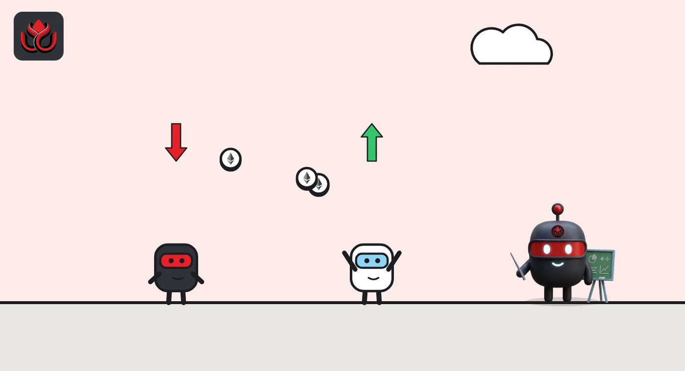

Shorts are paying longs on 21.5% of ether's open futures bets, against 1.4% for bitcoin
CoinGecko's data on 287 bitcoin and ether perp markets shows short sellers paying to hold their bets on 21.5% of ether's open interest, against 1.4% for bitcoin, a day after the sell-off.
Key points
- Funding was negative on 24 of 143 ether perp markets CoinGecko tracks, holding $9.15 billion of ether's $42.48 billion in open bets (21.5%).
- For bitcoin, funding was negative on 11 of 144 markets, $0.91 billion of $66.02 billion (1.4%).
- The biggest ether markets with negative funding were at Binance, Gate, OKX and CoinW. Binance's main BTCUSDT and ETHUSDT markets stayed positive.
What funding tells you
Perpetual futures (perps) are bets on a price with no expiration date. To keep their price close to the real coin, exchanges charge a small regular fee called funding. When it is positive, traders betting on a rise (longs) pay those betting on a fall (shorts). When it is negative, shorts pay longs, which usually means more traders want to be short than long.
Exchanges charge funding at different intervals, some every hour and some every eight hours, so we compare only whether the rate is above or below zero, not its size.
Ether leans short, bitcoin less so
We read all perp markets in CoinGecko's derivatives data on November 6, 2026, at 7:00 a.m. ET, and kept those with open interest (the value of bets still open).
- Ether: 143 markets, $42.48 billion in open bets. Funding was negative on 24 of them, holding $9.15 billion, about 21.5%.
- Bitcoin: 144 markets, $66.02 billion. Funding was negative on 11, holding $0.91 billion, about 1.4%.
The biggest ether markets with negative funding were Binance's ETHUSDC ($2.81 billion open), Gate's ETH_USDT ($1.80 billion), OKX's ETH-USDT-SWAP ($1.56 billion) and CoinW's ETH/USDC ($1.36 billion). Binance's larger ETHUSDT market ($5.33 billion) stayed positive at 0.0049%.
The bitcoin share is fragile. Gate's BTC_USDT market, with $4.73 billion open, showed funding of minus 0.0001% at 6:56 a.m. ET and exactly zero at 7:00 a.m. While it was negative, it lifted bitcoin's negative share to about 8.5%. The largest bitcoin market with negative funding at 7:00 a.m. was EVEDEX's BTC-USD ($845 million). Binance's BTCUSDT, the largest bitcoin market at $7.25 billion, had positive funding of 0.0058%.
Share of open bets with negative funding
%
Source: CoinGecko derivatives API, perpetual markets with open interest, read November 6, 2026, 7:00 a.m. ET

The price backdrop
On CoinGecko at 6:48 a.m. ET, ether traded at $2,242.62, down 7.2% in 24 hours, and bitcoin at $76,090, down 5.2%. Ether fell more, and its futures market now shows more short pressure.
The data shows only the balance of demand on each market. It does not show who holds the positions.
LC Insight analysis
This section is our reading of the facts above, not a statement of fact.
- We think the gap matters: after a drop, traders are adding or keeping bets against ether far more than against bitcoin.
- Crowded shorts can push prices up fast if the market turns, because shorts have to buy back to close. That risk is larger on ether than on bitcoin right now.
- Most ether markets still show positive funding, including Binance's biggest, so this is a lean, not a rush to short. Bitcoin funding sits so close to zero that one large market can swing its share.
What's next
- Whether ether funding flips back positive at Binance and OKX
- Ether's price against bitcoin
- Changes in total ether open interest
Disclaimer. This article is based on public information and the sources listed below as of the update time shown. It is for information only and is not investment, legal or tax advice. Figures may change as companies and authorities publish new data.